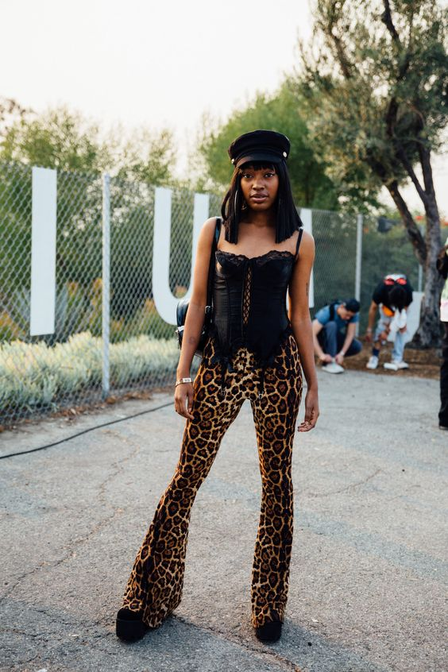
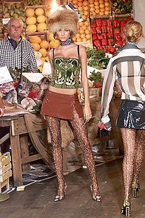
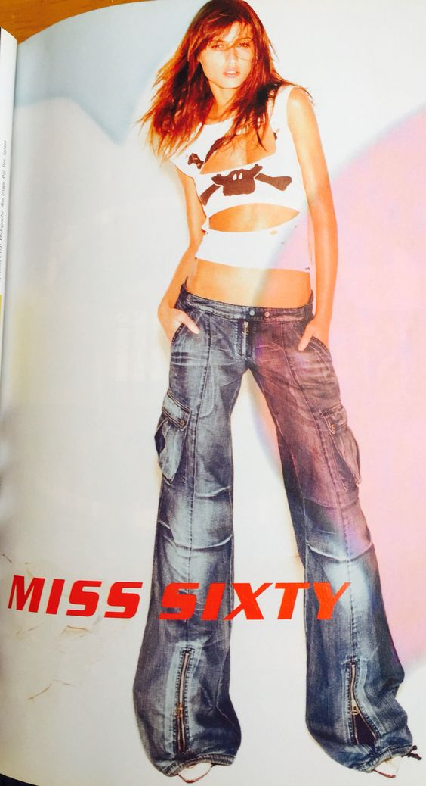
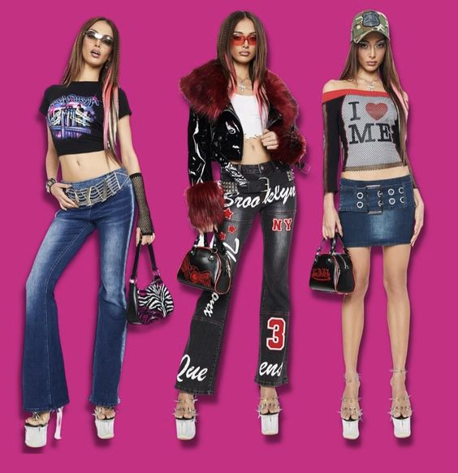

Moda Y2K
La moda Y2K, también conocida como "moda del año 2000" o "moda del milenio", se refiere a las tendencias y estilos de moda que eran populares a fines de la década de 1990 y principios de los años 2000. El término "Y2K" proviene de "Year 2000" (Año 2000) y se utilizó en referencia al cambio de milenio que ocurrió cuando el calendario pasó del año 1999 al año 2000.
Esta época se caracterizó por una estética específica que abrazaba la tecnología emergente, la extravagancia y la influencia de la cultura pop. Algunas de las características más destacadas de la moda Y2K incluyeron brillo y metálicos, denim ajustado y de cintura baja, estampados llamativos y ropa deportiva de uso cotidiano.
Las prendas de diseñador icónicas, como las de Versace y Dolce & Gabbana, también tuvieron una gran influencia en esta época, con diseños audaces y lujosos. Además, la moda Y2K se caracterizó por el uso visible de ropa interior y accesorios exagerados, como gafas de sol con monturas gruesas y bolsos pequeños.
Finalmente, el estilo futurista también tuvo su lugar en esta tendencia, con la utilización de telas sintéticas y detalles tecnológicos para reflejar la anticipación del futuro asociada con la llegada del año 2000. La moda Y2K ha experimentado un resurgimiento en la cultura pop en los últimos años, con diseñadores, celebridades e influenciadores que incorporan elementos de esta época en sus estilos actuales, lo que ha generado un renovado interés en las prendas y estilos de finales de los años 90 y principios de los 2000.
Brillo y metálicos: La ropa y los accesorios con detalles brillantes, como lentejuelas y telas con acabados metálicos, eran muy populares. Los colores plateados y dorados eran especialmente comunes.
Estampados llamativos: Los estampados extravagantes y coloridos eran una característica destacada de la moda Y2K. Los patrones de leopardo, los diseños psicodélicos y otros estampados llamativos eran comunes.

Prendas de diseñador icónicas: Marcas de diseñador como Versace y Dolce & Gabbana tuvieron una gran influencia en esta época, con diseños audaces y lujosos.

Denim de cintura baja: Los jeans de cintura baja, con la cintura ubicada por debajo de la cadera, eran una prenda icónica de la época. También se usaban faldas y vestidos de mezclilla.

Mix de texturas y capas: La combinación de diferentes texturas y la superposición de capas eran prácticas comunes en la moda Y2K, creando looks complejos y llamativos.
